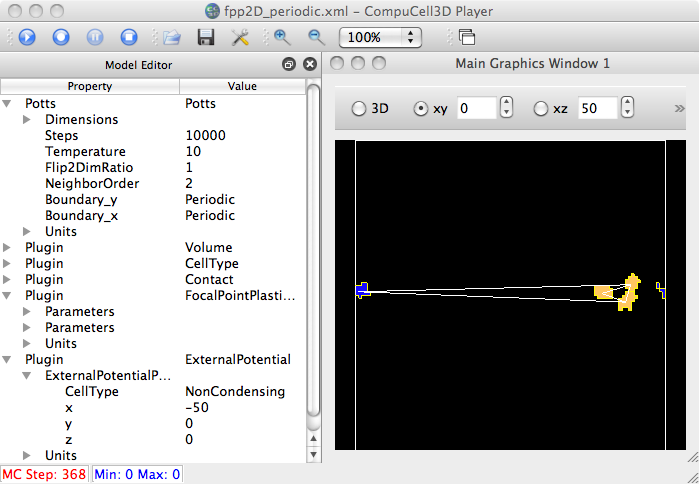
The above show the FPP 2D periodic bug. And the following show improved renderings where we try to detect wraparound.
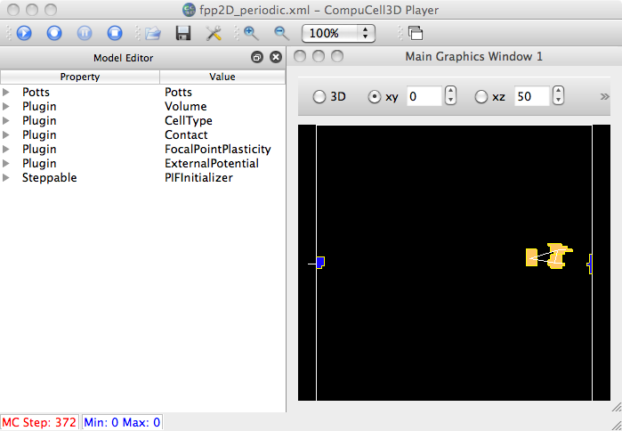
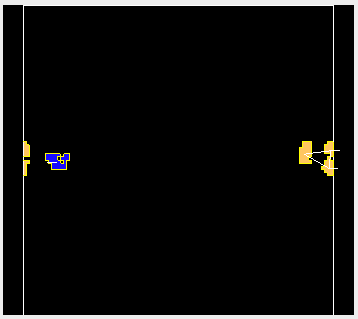
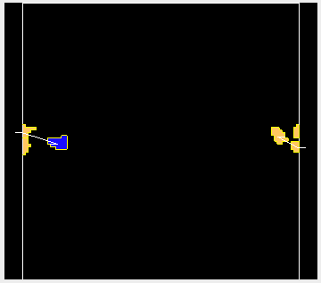
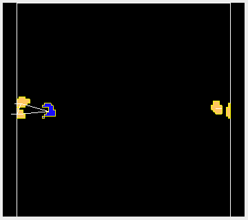
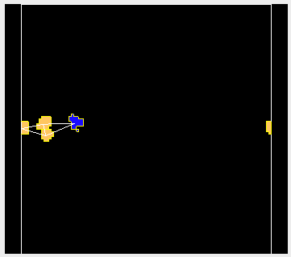
Here's the example demo model used to test (wraparound in X; just change the
ExternalPotential to be (0,-50,0) to test wraparound in Y):
heiland@129-79-58-155:~/dev/Glazier/cc3d-2-9-11/Demos/FocalPointPlasticity$ ty fpp2D_periodic.xml
<CompuCell3D>
<Potts>
<Dimensions x="100" y="100" z="1"/>
<Steps>10000</Steps>
<Temperature>10</Temperature>
<Flip2DimRatio>1</Flip2DimRatio>
<NeighborOrder>2</NeighborOrder>
<Boundary_y>Periodic</Boundary_y>
<Boundary_x>Periodic</Boundary_x>
<RandomSeed>3</RandomSeed>
</Potts>
<Plugin Name="Volume">
<TargetVolume>25</TargetVolume>
<LambdaVolume>2.0</LambdaVolume>
</Plugin>
<Plugin Name="CellType">
<CellType TypeName="Medium" TypeId="0"/>
<CellType TypeName="Condensing" TypeId="1"/>
<CellType TypeName="NonCondensing" TypeId="2"/>
</Plugin>
<Plugin Name="Contact">
<Energy Type1="Medium" Type2="Medium">0</Energy>
<Energy Type1="NonCondensing" Type2="NonCondensing">33</Energy>
<Energy Type1="Condensing" Type2="Condensing">33</Energy>
<Energy Type1="NonCondensing" Type2="Condensing">33</Energy>
<Energy Type1="NonCondensing" Type2="Medium">16</Energy>
<Energy Type1="Condensing" Type2="Medium">16</Energy>
</Plugin>
<Plugin Name="FocalPointPlasticity">
<Parameters Type1="Condensing" Type2="NonCondensing">
<Lambda>10.0</Lambda>
<ActivationEnergy>-50.0</ActivationEnergy>
<TargetDistance>7</TargetDistance>
<MaxDistance>20.0</MaxDistance>
<MaxNumberOfJunctions>2</MaxNumberOfJunctions>
</Parameters>
<Parameters Type1="Condensing" Type2="Condensing">
<Lambda>10.0</Lambda>
<ActivationEnergy>-50.0</ActivationEnergy>
<TargetDistance>7</TargetDistance>
<MaxDistance>20.0</MaxDistance>
<MaxNumberOfJunctions>2</MaxNumberOfJunctions>
</Parameters>
</Plugin>
<Plugin Name="ExternalPotential">
<ExternalPotentialParameters CellType="NonCondensing" x="-50" y="0" z="0"/>
</Plugin>
<!-- <Plugin Name="Connectivity">
<Penalty>10000000</Penalty>
</Plugin> -->
<Steppable Type="PIFInitializer">
<PIFName>Demos/FocalPointPlasticity/FocalPointInit.pif</PIFName>
</Steppable>
</CompuCell3D>
For the drawing functions, rf. Graphics/MVCDrawModel2D/3D.py, initFPPLinksActor*()
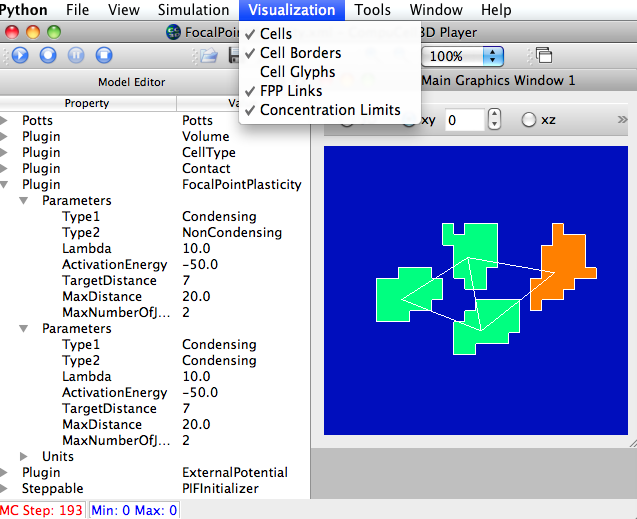
Simple 2D Demo.
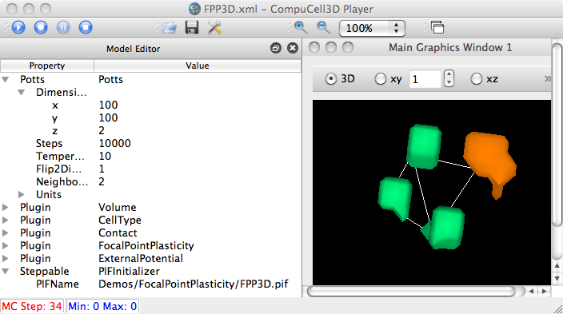
Sanity check on the analogous 3D version.
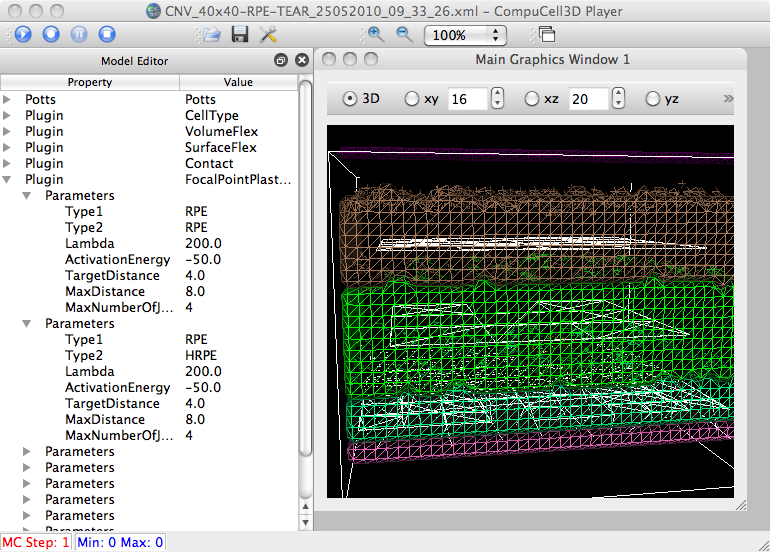
Abbas's simple AMD model (.xml), 40x40x32.
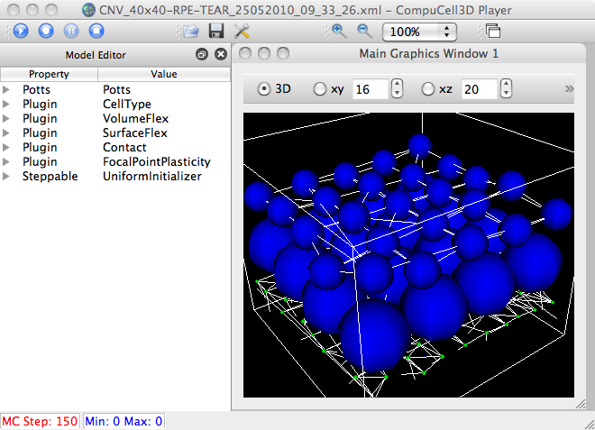
Showing cell glyphs (without default cell field vis), but with bogus colors.
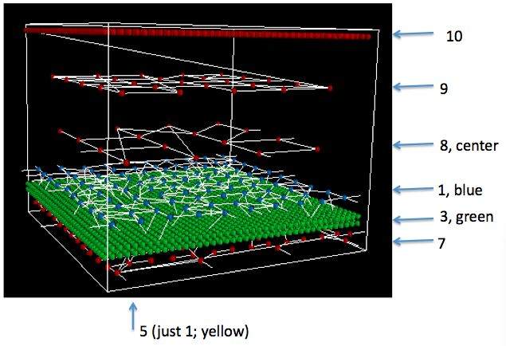
Showing buggy links and "wraparound" links due to periodicity.
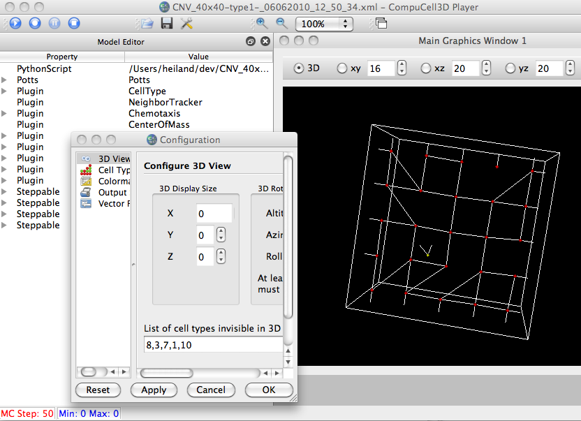
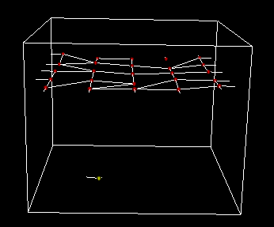
Showing partial solution to wraparound links problem and allowing for invisible cell types for glyphs. (NOTE: these images only show "outgoing" periodic link stubs, not "incoming". It does raise the question, though, of whether or not the data structures for the FPP links are symmetric, e.g. if cell A has a (wraparound) link to cell B, does B have one to A? If so, we're drawing the links twice anyway and don't need to worry about drawing incoming stubs. I haven't confirmed this is the case, although based on the above images, it would seem that the lower-right stub, going out to the right, does NOT have a corresponding incoming stub on the opposite side.
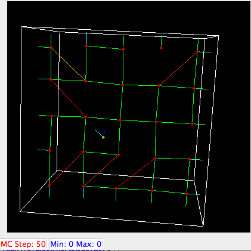
Showing links colored according to scalar (actualDist/targetDist) with a blue->red colormap.
To Do: